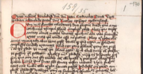
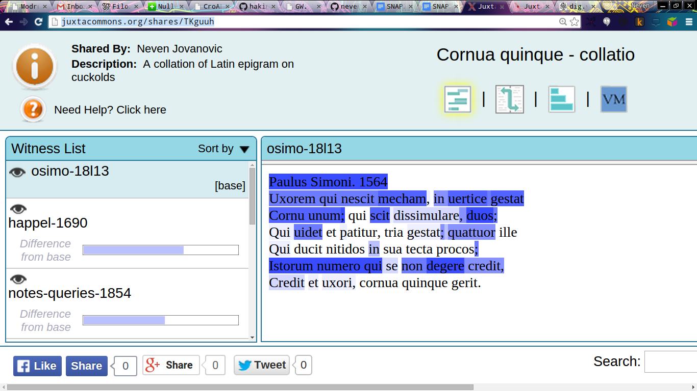

Problemi kritičkog izdanja
Neven Jovanović / neven.jovanovic@ffzg.hr
Tekstualne mreže ranonovovjekovne Hrvatske, 19. lipnja 2015.
Filozofski fakultet Sveučilišta u Zagrebu
Odsjek za klasičnu filologiju
croala.ffzg.unizg.hr/sunoikisis/modruski-izdanje.html
Github

Olomouc, Češka, Vědecká knihovna, M I 159.

Juxta, epigram o rogonjama.